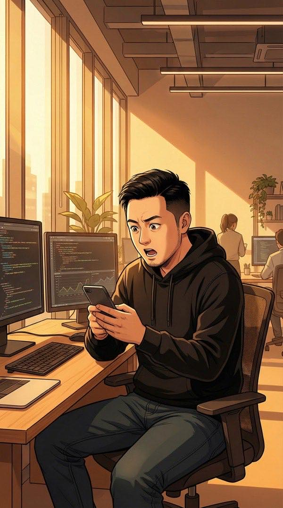
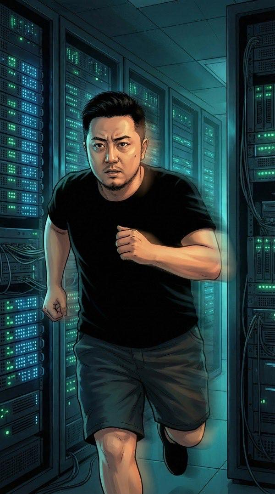
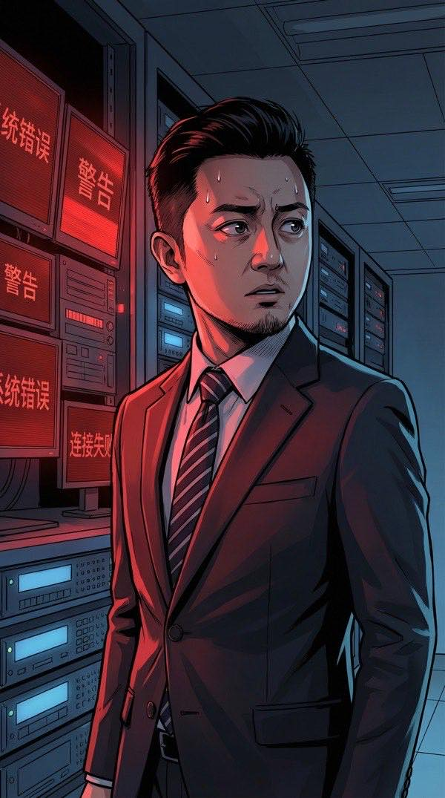
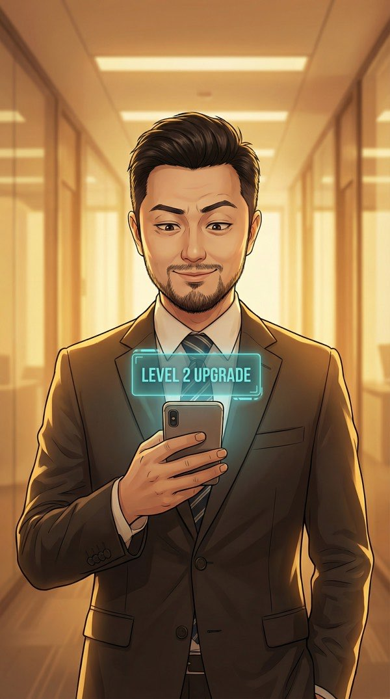
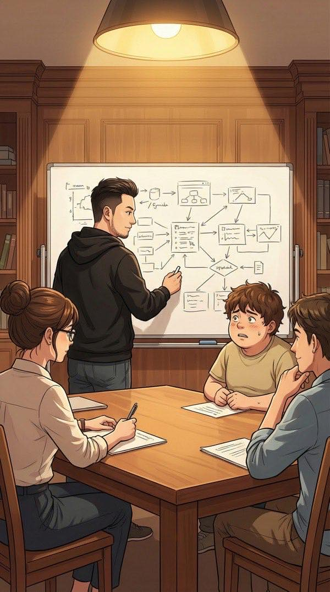
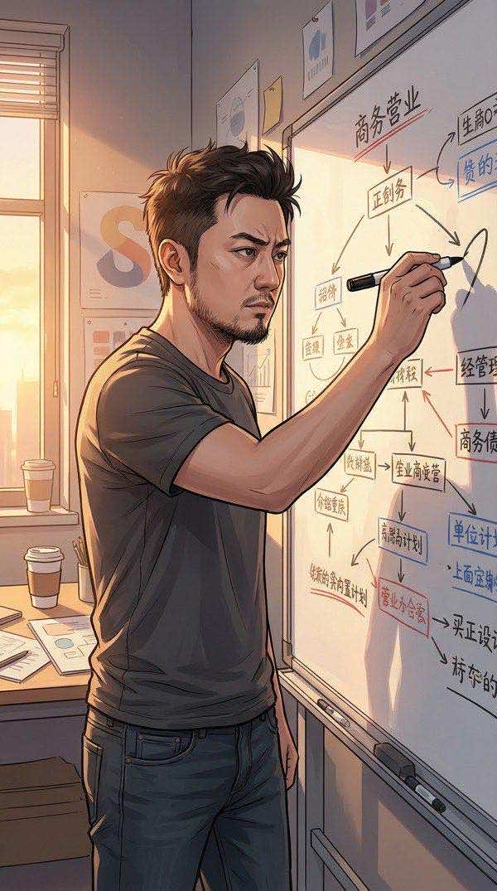

2026年4月5日，下午四点半。我坐在灵犀科技的办公室里，习惯性地刷着手机上的科技新闻——然后整个人僵住了。
ACT 1 — 系统降临
深圳·灵犀科技办公室

突发：AI训练数据供应商Mercor遭遇重大安全事件，Meta紧急暂停合作
来源：Wired · 2026年4月3日
Mercor……那不就是给OpenAI、Anthropic、Meta提供训练数据的核心供应商吗？如果他们的数据泄露了……
就在我消化这条新闻的时候，手机屏幕突然闪了一下。一个从未见过的APP图标出现在桌面上——金色的眼睛图案，下面写着三个字：
屏幕显示"先知系统"
我没有下载过这个APP。但好奇心驱使我点了进去——一个半透明的界面浮现出来，像AR一样悬浮在空气中。
[先知系统 v0.1 Beta]
用户识别完成。欢迎使用先知系统。
鉴于你作为AI创业者的信息获取速度，我对你能撑到现在表示惊讶。
什么鬼……这个系统怎么知道我是AI创业者？
[深层动机分析 — Level 1]
Mercor事件表面分析：TeamPCP黑客组织入侵了LiteLLM工具链，波及数千家使用该工具的企业。但真实动机不是"数据窃取"——是"方法论窃取"。
通俗点说：他们不是偷答案，是偷的出题方法。这比偷答案可怕一万倍。
我站在会议室的大屏幕前，系统自动投射出一张复杂的关系网络图。Mercor、LiteLLM、OpenAI、Anthropic、Meta——所有巨头的数据供应链，像一张蛛网。
等等……如果LiteLLM被入侵了，那用LiteLLM的不只是Mercor。我们灵犀科技也在用啊。
[风险评估]
灵犀科技当前使用LiteLLM v1.62.3，属于受影响版本范围。你的模型训练管线已暴露约72小时。好消息：你的训练数据体量太小，不是主要目标。坏消息：你的API密钥、模型配置、微调参数全部可能已泄露。
建议你现在开始紧张。
我掏出手机拨号，一边在办公室里快步走动。窗外的夕阳把深圳科技园染成了金色，但我无暇欣赏。
我"小陈，紧急情况。把所有LiteLLM相关的服务停掉，API密钥全部轮换，训练管线暂停。对，现在就做。"
[72小时走向预测 — 首次预判]
48小时内，OpenAI将宣布紧急安全审计并暂停所有第三方数据供应商接入。同时，Anthropic下一代模型"Mythos"的基准测试数据即将泄露。这两件事不是巧合。
对你的公司来说，这意味着一个72小时窗口期。你打算怎么用？
决策点 1：系统首次预判
A：立刻调整战略，趁安全审计风暴提前布局自研数据管线 ✓
B：先观望，验证系统预判是否准确再行动
我不需要验证。如果这个系统说的哪怕有三成是真的，等别人反应过来就晚了。
[决策评估]
选择A。果断型决策。经验值+1。
终于做了个正确决定。你的起点真的很低，但至少方向对了。
我打开笔记本开始制定应急方案。不知道为什么，嘴角翘了一下——这个毒舌系统，居然让我觉得有点好笑。
ACT 2 — 初次验证
灵犀科技·服务器机房

凌晨一点。我换上T恤短裤冲进了公司机房。冰冷的空调风混着服务器的嗡鸣声，蓝绿色的指示灯在黑暗中闪烁。
得亲自确认受影响的范围。

服务器机架上的监控屏幕同时亮起红色警告——"异常访问检测"、"API密钥泄露风险"、"训练数据管线已被标记"。
系统说得没错……72小时前就已经暴露了，我们一直在裸奔。
我拨通了小陈的视频通话。屏幕上，她戴着圆框眼镜、齐耳短发有点凌乱，但眼神锐利。
我"数据库那边情况怎么样？"
小陈"API密钥已经全部轮换了。但朱总，我发现了更严重的问题——我们的微调参数配置文件被访问过，时间戳显示是三天前。"
小陈的手指在键盘上飞舞，多个终端窗口里滚动着绿色的代码。
小陈"我正在做全面的安全扫描。所有受感染的LiteLLM组件已隔离，正在部署备用路由。"
小陈永远是最靠谱的那个人。
两个小时后。我靠在机房走廊的墙上，长出了一口气。服务器机架的指示灯重新回到了平静的蓝绿色。
安全漏洞已修补。API密钥已更换。训练管线切换到自有路由。我们的损失……比想象中小。因为我们反应够快。

手机震动。先知系统弹出一条新消息。
先知系统 — Level 2 已解锁
新增能力：72小时走向预测（扩展版）· 隐藏关联分析
恭喜，你成功保住了你的小公司。经验值+3。虽然在整个AI行业的地震中，你的公司大概相当于一只蚂蚁成功搬走了一粒米。但蚂蚁也有蚂蚁的尊严。
灵犀科技·会议室
第二天下午。我换上了深蓝色西装外套和白T恤，坐在会议室里。对面是陈建华——华盛资本的合伙人，五十多岁，银灰色头发一丝不苟，深色西装价格大概能买我办公室的全部家具。
陈建华"朱总，直说了。我们看好灵犀科技。五千万，A轮领投。但有个条件——技术架构需要接入我们投资的另一家公司的基础设施。"
我站了起来。不是愤怒，而是礼貌但坚定。
我"陈总，非常感谢您的认可。但接入指定基础设施等于让渡技术自主权。尤其是现在这个安全事件刚发生的时候，我们必须完全掌控自己的技术栈。"
[翻译服务]
他说的"技术协同"，翻译成人话就是"我要控制你的核心技术"。他投资的那家公司，恰好是LiteLLM事件中受影响最严重的企业之一。你猜他为什么急着找替代方案？
决策点 2：投资人的条件
A：拒绝不合理条件，保持技术独立性 ✓
B：接受条件，拿到资金加速发展
夜深了。陈建华走后，我一个人留在办公室。脱掉西装外套，就剩白T恤。笔记本屏幕的光映在我的脸上。
系统的Level 2分析结果让我越看越心惊——Mercor泄露的不只是训练数据本身，而是各大AI实验室的"训练方法论"。包括OpenAI如何设计RLHF奖励函数、Anthropic如何构建Constitutional AI的约束框架。
如果这些方法论流出去……任何有算力的团队都能复制顶级模型的训练路径。
我坐直了身体，手指悬在键盘上方。系统弹出一条新的分析。
[隐藏关联分析 — Level 2]
这批泄露的训练方法论中，包含一个关键信息：OpenAI刚刚完成的1220亿美元融资，投后估值8520亿美元。这轮融资的时间点——恰好在Mercor事件之前一周。巧合？还是他们已经提前知道数据泄露的风险，所以加速融资锁定估值？
决策点 3：发现隐藏真相
A：公开发声，揭示供应链安全隐患，推动行业安全标准 ✓
B：保持沉默，利用信息差为自己的公司获利
如果我什么都不说，确实可以利用这个信息差赚一笔。但如果整个行业的地基都是脆弱的，我一个人站在上面又有什么意义？
你确定？你刚升到Level 2就想搞大新闻？……好吧，反正不是我的公司。经验值+3，勇气加成。
ACT 3 — 风暴中心
第三天·风暴降临
我的文章发出去了。标题是《AI供应链安全的至暗时刻：一个创业者的亲历与反思》。
第二天早上，我坐在楼下的咖啡馆里。手机通知栏已经被撑爆了——微信999+、知乎热搜第三、微博话题阅读量过亿。
好家伙……我只是想说实话，没想到动静这么大。
信息风暴。各大媒体、自媒体、行业分析师——所有人都在讨论Mercor事件和AI供应链安全。而我的文章，成了风暴眼。
灵犀科技CEO朱江万字长文揭露AI供应链危机，引发行业地震
来源：36氪 · 2026年4月6日
OpenAI紧急宣布安全审计，暂停所有第三方数据接入——正如一位创业者两天前的预言
来源：机器之心 · 2026年4月6日
系统的预判，应验了。
下午三点，公司大堂。一个穿着Prada定制西装的男人拦住了我——刘锐，锐智科技的CEO。设计师眼镜，油亮的后背头，一米八五的个子比我高了一头。
刘锐"朱总，你那篇文章写得很好啊。不过你有没有想过——你公开的那些技术细节，可能会让某些人很不高兴？"
我们面对面站着，他居高临下地看我。旁边的保安和前台都在偷偷看。
我"刘总，如果说实话会让人不高兴，那可能不高兴的人本身就有问题。"
我双臂抱胸，一寸不退。虽然我只有一米七二，但从来不觉得身高和底气有什么关系。
[信息补充] 锐智科技是Mercor在亚太地区的最大客户。刘锐不高兴的原因不是你说了实话，而是你说的实话恰好证明了他的公司是最大的受害者之一。丢人这种事，确实让人不高兴。

回到公司。紧急团队会议。小陈坐在旁边快速记录，小王——我们的产品经理——看起来有点紧张，圆脸上架着的眼镜一直在往下滑。
小王"朱总……竞品那边已经开始挖我们的人了。锐智开出了双倍薪水。我们的核心算法工程师张工，今天收到了他们的offer。"
我站在会议桌前，抬起手示意大家安静。
我"各位，我知道现在局面很紧张。但我做那个决定——公开发声——不是冲动。系统……我的判断告诉我，整个行业都在经历一次洗牌。能活下来的，是手里有真东西的公司。"
我"至于张工——如果他想走，不拦。留下来的人，我保证，三个月内你们会看到这个决定的回报。"
决策点 4：团队动摇
A：坚持判断，相信自己的分析和系统的预测 ✓
B：妥协，采取折中方案安抚团队
[团队信任度面板]
小陈：信任度92%（波动±2%，铁杆）
小王：信任度71% → 本次决策后预计降至65% → 但见到成果后回升至83%
张工：信任度34%（建议放弃治疗）
人心这种东西，比AI模型好训练多了。至少人心不需要8520亿美元的估值。
深夜。所有人都走了，只剩我和屏幕上的先知系统。
Level 2的"隐藏关联分析"突然弹出了一个前所未有的结果——三个看似毫不相关的事件，被一条金色的线连了起来。
不可能……
[隐藏关联网络 — Level 2 最高权限]
节点A：Mercor/LiteLLM供应链攻击（4月3日）
节点B：OpenAI 1220亿美元融资，估值8520亿（3月底）
节点C：Anthropic "Mythos"基准测试数据泄露（4月5日）
关联分析：三个事件的时间窗口精确到72小时内。概率分析显示——这不是三个独立事件，而是同一个"局"的三步棋。
第一步：泄露Mercor数据 → 暴露各家训练方法论
第二步：OpenAI提前融资 → 锁定高估值（因为他们知道数据泄露会导致护城河削弱）
第三步：泄露Anthropic跑分 → 制造恐慌，让市场相信"下一代模型已经不再是秘密"
有人在下一盘大棋。目标不是某一家公司——是要重塑整个AI行业的权力格局。
我走上了公司楼顶的露台。深圳的夜风带着湿热的气息，远处的城市灯火像一片会呼吸的星海。
如果系统的分析是对的，那个幕后操盘手的目标很明确：让训练方法论公开化，打破几家巨头的技术垄断。这对行业来说……也许不全是坏事？
但方法太激进了。供应链安全被撕开了一个口子，无数小公司会成为附带损伤。包括我。
手机突然亮了。一个陌生号码。
这个时间，这个号码……
ACT 4 — 底牌
深夜·未知来电
我接了电话。对方的声音很年轻，带着一种奇怪的平静。
未知来电"朱江先生？我看了你的文章。写得很勇敢——但你只看到了冰山一角。"
我"你是谁？"
未知来电"这不重要。重要的是——你手机上的那个APP，你以为是凭空出现的？"
电话挂断了。
回到家。我坐在书房里，笔记本电脑屏幕的光是唯一的光源。
那个人知道先知系统的存在。这意味着……系统不是随机出现的。是有人刻意安装到我手机上的。
为什么是我？一个估值不到一亿的小公司CEO，凭什么能拿到一个能预判AI行业走向的系统？
先知系统再次浮现。这一次，它主动弹出了一个全新的功能界面。
[战略机遇扫描 — Level 2 新功能]
检测到行业真空期。当前AI数据供应链信任度归零。市场需要一个"可验证的AI训练数据交易平台"。
预测市场规模：未来3年内超过500亿美元。
当前参与者：0家。
你的窗口期：14天。
一个所有人都需要、但还没人做的东西……

我站在客厅的白板前，手里的马克笔飞速移动。蓝色画框架、红色标重点、绿色标待验证。
可验证AI数据平台——把区块链的可追溯性用到训练数据溯源上。每一条训练数据都有来源、有审计、有可验证的质量评估。
这不只是一个商业机会。如果做成了，可以从根本上解决Mercor事件暴露的问题。
决策点 5：战略方向
A：进入全新赛道——可验证AI数据平台，天花板极高 ✓
B：在现有赛道上加倍投入，稳健但天花板有限
窗外的天开始泛白。我不知不觉已经工作了一整夜。
坐在椅子上，看着窗外的第一缕阳光穿过深圳的天际线。手机上，先知系统安静地显示着一条信息。
[决策评估 — 综合]
今夜决策序列：5个决策，全部选择了高风险高回报路线。
综合判断：你不是在创业，你是在赌命。
但赌命的人如果运气好，就叫"远见"。经验值+5。
Level 2 经验槽 — 已满
Level 3 解锁条件：？？？
[Level 3 预告]
Level 3的解锁条件不在你的控制范围内。
提示：你可能需要的不是"做对事"，而���"遇对人"。
别问我是什么意思。到时候你就知道了。如果你还活着的话。
就在我以为今夜的惊喜已经结束的时候——
先知系统突然变成了刺眼的红色。从启用到现在，它第一次显示这种颜色。
[⚠️ 紧急预警 — 最高优先级]
检测到异常信号……
来源不是AI行业。
来源不是商业竞争。
来源是……
[⚠️ 信号源锁定]
来源是——你自己。
补充说明：你的生物特征数据在72小时前出现了一个不应该存在的异常。这个异常与先知系统的安装时间完全吻合。
建议：照一面镜子。仔细看。
手机画面定格。系统界面闪烁不定。
什么意思……我自己是信号源？我的身体发生了什么变化？
这个系统，到底是什么？
先知系统的真正来源、朱江身体的异常信号、
以及那通神秘电话背后的人——
一切答案，都在72小时后。
以及那通神秘电话背后的人——
一切答案，都在72小时后。
CHAPTER 1 — END · TO BE CONTINUED